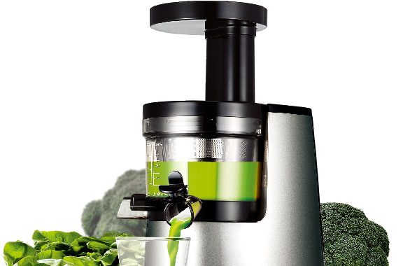
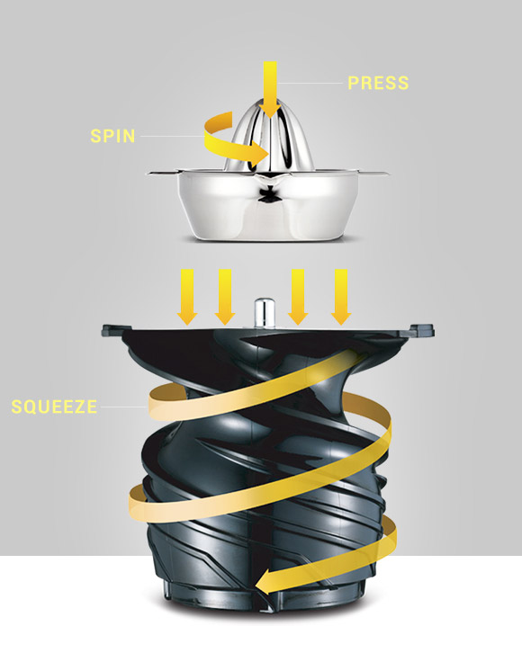

어린이 식습관 개선 캠페인, 우리아이 식습관 휴롬주스로 시작하세요!
자세히보기가장 건강한 습관 휴롬주스
휴롬주스는 먹기 힘든 많은 양의 채소와 과일을 손쉽게 섭취할 수 있으며 자연의 맛과 영양을 그대로 담아냅니다.

인류 건강을 위한 기술
스퀴저 원리를 혁신적으로 발전시킨 휴롬 저속착즙기술(SST™)과 인류의 건강한 삶을 위한 기술을 끊임없이 연구합니다.

RECIPES
나에게 맞는 휴롬주스 만들기
홈메이드 휴롬주스는 채소, 과일, 곡류, 견과류 등 신선한 재료를 직접 골라 다양한 맛과 영양을 한잔에 담아 즐길 수 있습니다.